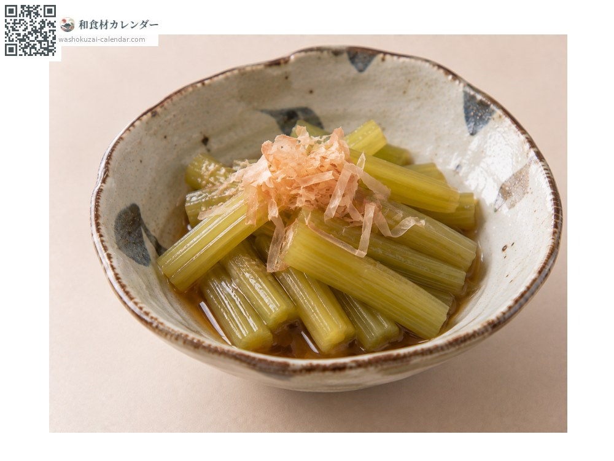
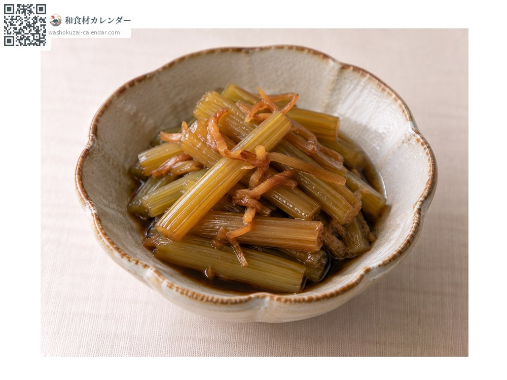
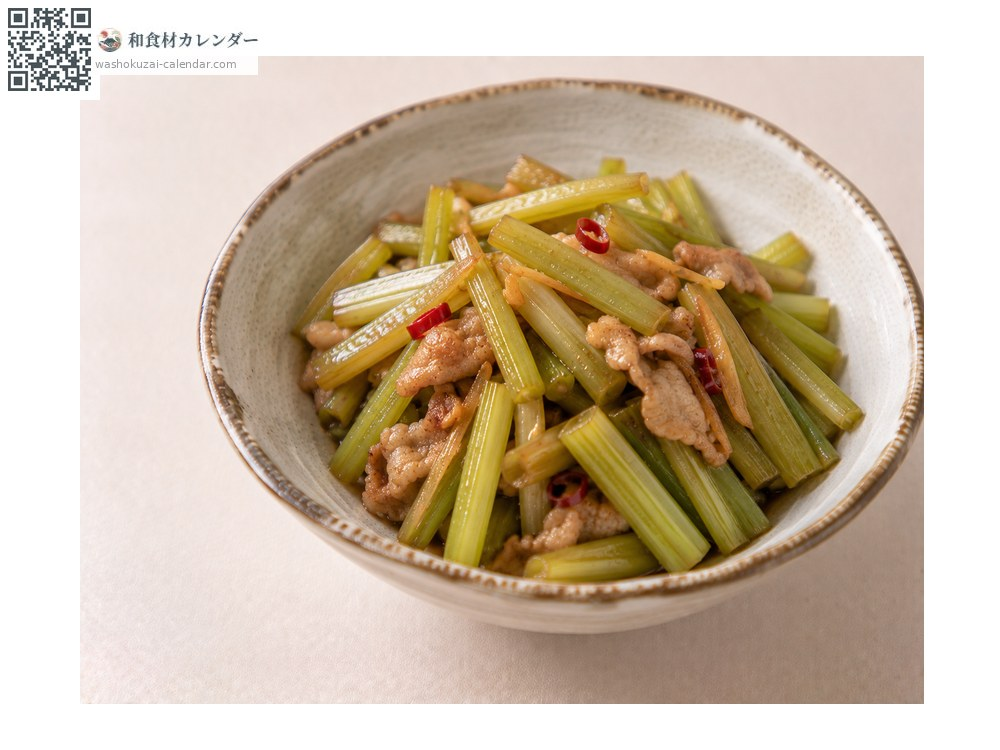
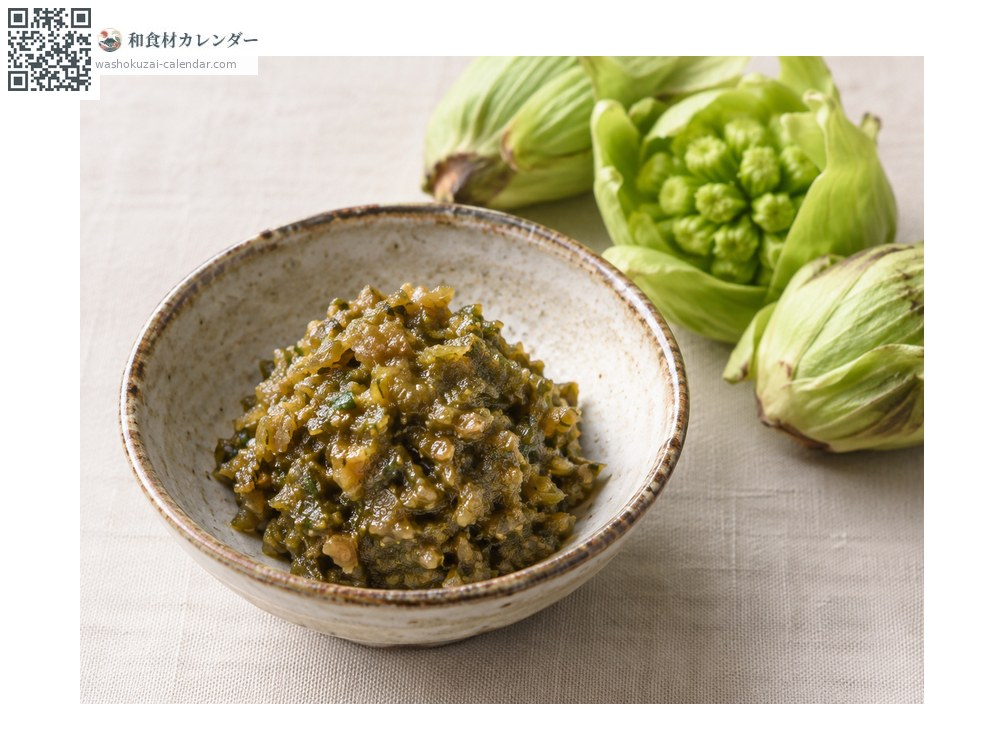

野菜
フキ
ふき
別名・別表記蕗、fuki
旬は3月・4月・5月

旬の時期
1月
2月
3月
4月
5月
6月
7月
8月
9月
10月
11月
12月
旬出回り
調理法

煮物
下茹でして出汁で煮る。

きゃらぶき
甘辛く煮詰める。

炒め物
油と相性が良い。

フキ味噌
ふきのとうを味噌と炒める。
選び方
茎が太すぎず、鮮やかな緑で張りがあるもの。切り口が新しいもの。
保存方法
下茹でして皮を剥き、水に浸して冷蔵。2〜3日で使い切る。
主な産地
豆知識
数少ない日本原産の野菜。春先に出る花のつぼみが「ふきのとう」。